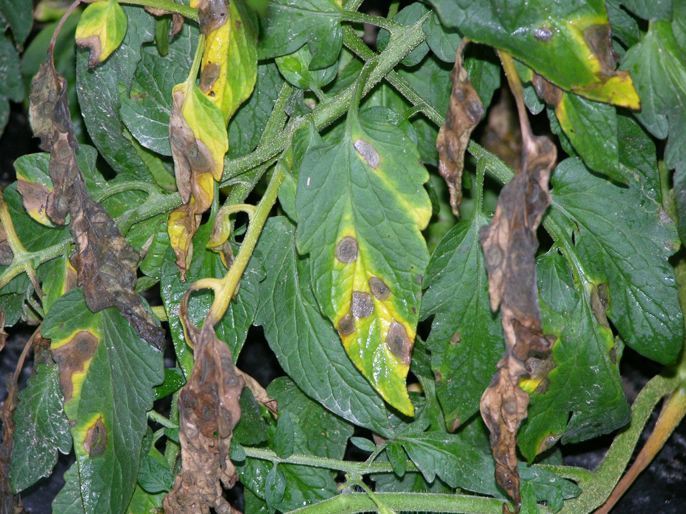
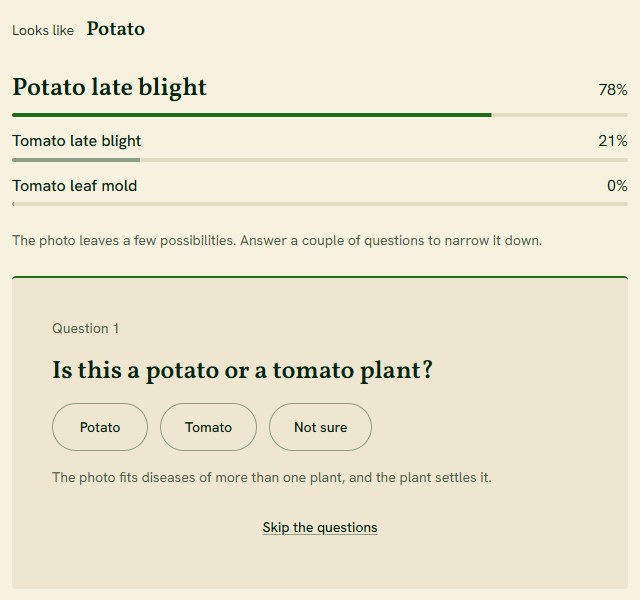
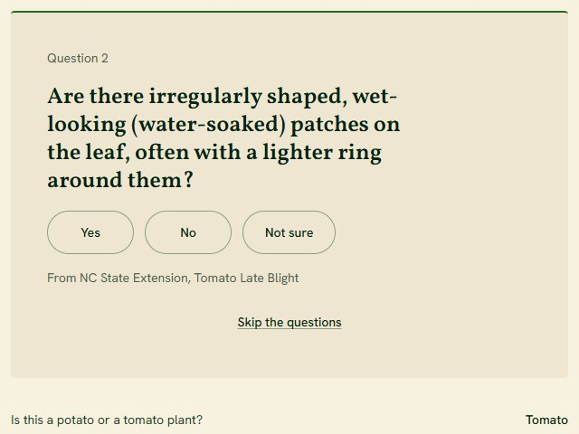
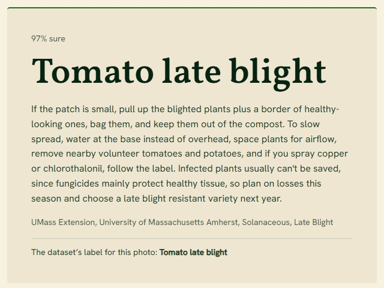
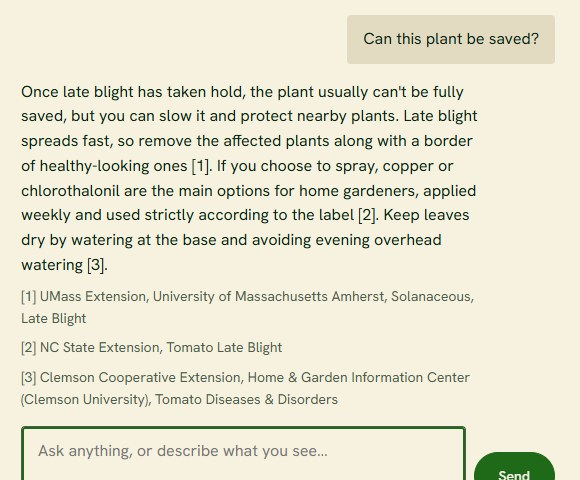

SPROUT
Smart Plant Recovery and Optimization Utility Tool
Photograph a sick leaf. SPROUT names the likely disease, asks a few yes or no questions written from 237 university guides, and tells you when it can’t tell.

Tomato with early blight, the kind of photo SPROUT starts from.
How a check works
-

The photo gives the odds
A ConvNeXt V2 vision model scores 29 conditions across 14 plants in under half a second. When the top suspects belong to different plants, it asks which plant first.
-

Questions come from the guides
While you read, a background worker searches 237 university extension guides and writes yes or no questions from the symptom passages. Code keeps the one that best separates the suspects.
-

A diagnosis you can check
Each answer updates the odds in code, so the same answers always give the same result. Once one disease clears 93%, you get it with care advice and the guide it came from.
-

Then ask anything
The chat remembers the conversation and answers from the same guides with numbered sources. Describe a symptom and the odds move again.
By the numbers
- The right disease is in the top three from the photo alone, before a single question
- 96%
- From photo to diagnosis, median on a laptop CPU
- 0.4 s
- From a tap to the next question, median over 56 taps
- 6.5 ms
- University extension guides it reads from
- 237
What’s under the hood
A vision model trained on a GPU, a search engine over the guides, and a small server that keeps every number in code.
See the architecture- Vision modelConvNeXt V2 Tiny fine-tuned in PyTorch on a CUDA GPU with mixed precision, on 19,260 lab and field photos, exported to ONNX for CPU serving.
- Guide searchHybrid keyword and embedding search over 237 guides, with a cross-encoder reranker on top.
- Question engineOdds updated by code, next question chosen by expected information gain, questions and advice written ahead in background threads.
- Experiment trackingEvery training run and result logged in MLflow, data versioned with DVC, every published number traced to a run record.
Aakash Senthilnathan
Statistics and Data Science at UC Santa Barbara. I built SPROUT end to end: the data pipeline, the model, the search, the server and this site.
- Portfolioportfolio site
- Emailaakash.senthilnathan@gmail.com
- LinkedInlinkedin.com/in/aakashsenthilnathan
- GitHubgithub.com/aakashksen